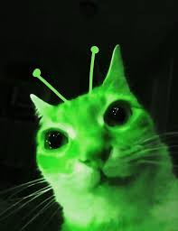

List of possible home planets:
- SOL-04 Earth
- AZR-11 Pepple
Anyone who claims to be from Pepple may be confused with the following:
- AZR-10 Peppy
- POP-00 Peyey
- MIN-02 Pelly
- OUR-17 Pellation
- HOL-02 Pharloom
- YOG-00 Headquaters
- LET-06 Vow
- SLA-10 Tralfamadore
- LEV-09 N/A
- DRG-03 Hoxxes V
- CRI-00 Redgrass
Wrong planets?
Learn more about our process here (image):
